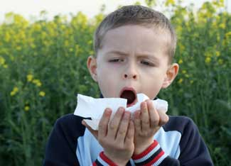

Summer brings longer days, swimming and camping, grilled burgers and sticky popcicles - but in addition to these treats, summer sometimes invites allergies, bug bites, sunburns and other seasonal hazards. There’s no need to fret, however, because you can treat a number of summer ailments with a few simple tools from nature.
Itchy, sneezy, swollen and all clogged up? Not this year: You might be able to build your tolerance to allergy-triggering pollens by daily eating small amounts of raw, local honey prior to allergy season. (The honey exposes your body to small amounts of local pollens.) Gradually increase the amount of honey up to a teaspoon per day, and continue through the season.
Make the most of the natural antihistamine properties of vitamin C by taking a supplement or eating foods high in C (such as oranges and bell peppers).
To slow inflammation, eat garlic or onions - alone or in a meal. Try hot foods such as horseradish or wasabi to relieve congestion.
Read Six Natural Allergy Remedies for more good ideas.
If you’ve accidentally disturbed a honey bee and suffered the consequences, the first step is to remove the stinger. First and foremost, do not pull it out. Instead, use your fingernail to scrape out the stinger to avoid releasing more venom into your skin. Next, rub calendula flower or plaintain leaf onto the site to relieve pain and swelling. You can also apply a fresh slice of onion or garlic.
Read Natural Bee Sting Remedies for more information.
Oh, the chilly pool water is perfect on hot, humid days. So perfect that it’s almost too easy to overstay your time in the sun and go home overdone. If you’ve turned more pink than tan, try applying vitamin E to soothe your skin. You can also cut a slice of cucumber and place it on the burn for cooling and comfort.
While it may not be new news, aloe is a famous healing plant for good reason. Simply slice open a leaf and apply the gel directly to speed the healing process. You should be able to find the gel at a health food store if you aren’t growing your own.
Read Soothing Sunburn Remedies & Safer Sunscreen for additional information. Check out Curing the Ails of Summer for more remedies for summer maladies.
|
 ISTOCKPHOTO Eating small amounts of raw, local honey before and during allergy season is just one way to naturally alleviate allergies. |
|
|